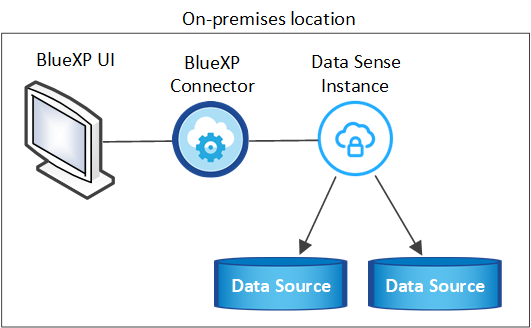
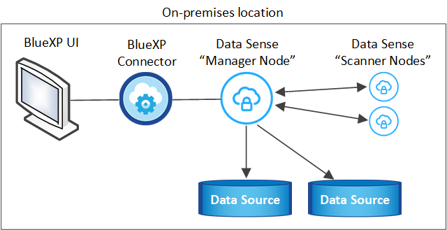
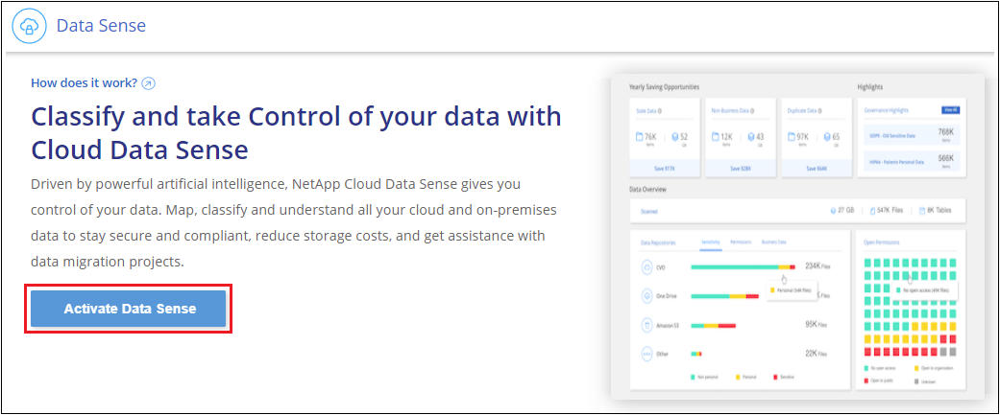
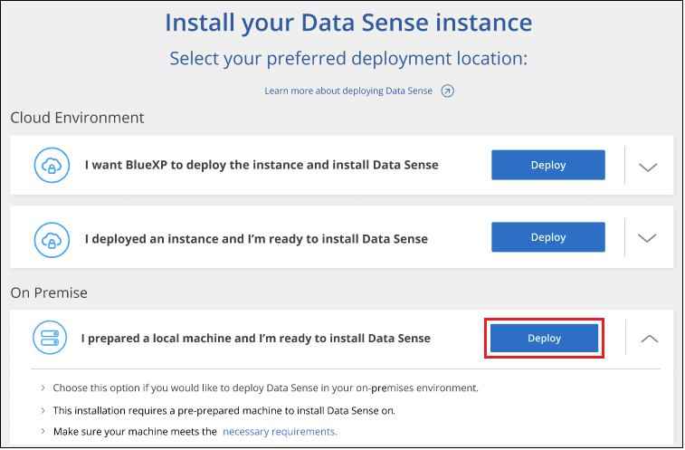

Solicitar cambios en el documento
Solicitar cambios en el documento Editar en GitHub
Editar en GitHub Guía del colaborador
Guía del colaboradorImplemente Cloud Data Sense en sus instalaciones sin acceso a Internet
Colaboradores
Complete unos pasos para implementar Cloud Data Sense en un host de un sitio local que no tiene acceso a Internet. Este tipo de instalación es perfecta para sus sitios seguros.
Tenga en cuenta que también puede "Ponga en marcha el sentido de los datos en un sitio local con acceso a Internet".
Orígenes de datos compatibles
Cuando se instala de esta manera (a veces denominado sitio "sin conexión" o "oscuro"), Data Sense solo puede analizar datos de orígenes de datos que también son locales del sitio local. En este momento, Data Sense puede analizar las siguientes fuentes de datos locales:
-
Sistemas ONTAP en las instalaciones
-
Esquemas de base de datos
-
Cuentas locales de SharePoint (SharePoint Server)
-
Recursos compartidos de archivos NFS o CIFS de terceros
-
Almacenamiento de objetos que utiliza el protocolo simple Storage Service (S3)
En situaciones especiales en las que necesita una instalación BlueXP muy segura, pero también desea analizar datos locales de cuentas de OneDrive o de cuentas de SharePoint Online, puede utilizar el instalador sin conexión de Data Sense y proporcionar acceso a Internet a unos pocos extremos seleccionados. Consulte Requisitos especiales para SharePoint y OneDrive para obtener más detalles.
Actualmente no hay compatibilidad para escanear cuentas Cloud Volumes ONTAP, Azure NetApp Files, FSX para ONTAP, AWS S3 o Google Drive cuando Data Sense se implementa en un sitio oscuro.
Limitaciones
La mayoría de las funciones de detección de datos funcionan cuando se implementa en un sitio sin acceso a Internet. Sin embargo, algunas funciones que requieren acceso a Internet no son compatibles, por ejemplo:
-
Administración de etiquetas de Microsoft Azure Information Protection (AIP)
-
Envío de alertas por correo electrónico a usuarios de BlueXP cuando determinadas políticas críticas devuelven resultados
-
Configuración de funciones de BlueXP para usuarios diferentes (por ejemplo, Administrador de cuentas o Visor de cumplimiento)
-
Copiar y sincronizar archivos de origen mediante Cloud Sync
-
Recibiendo comentarios de usuarios
-
Actualizaciones de software automatizadas desde BlueXP
Tanto el conector BlueXP como el sensor de datos requerirán actualizaciones manuales periódicas para habilitar nuevas funciones. Puede ver la versión de Data Sense en la parte inferior de las páginas de la interfaz de usuario de Data Sense. Compruebe la "Notas de la versión de Cloud Data Sense" para ver las nuevas funciones de cada versión y si desea esas funciones. A continuación, puede seguir los pasos a. Actualice su software de detección de datos.
Inicio rápido
Empiece rápidamente siguiendo estos pasos o desplácese hacia abajo hasta las secciones restantes para obtener todos los detalles.
 Instale el conector BlueXP
Instale el conector BlueXPSi aún no tiene un conector instalado en su sitio local sin conexión, "Despliegue el conector" Ahora en un host Linux.
 Revise los requisitos previos de detección de datos
Revise los requisitos previos de detección de datosCompruebe que su sistema Linux cumple con el requisitos del host, que tiene todo el software necesario instalado y que su entorno sin conexión cumple con el necesario permisos y conectividad.
 Descargue e implemente Data Sense
Descargue e implemente Data SenseDescargue el software Cloud Data Sense del sitio de soporte de NetApp y copie el archivo del instalador en el host Linux que tiene pensado utilizar. A continuación, inicie el asistente de instalación y siga las indicaciones para implementar la instancia de Cloud Data Sense.
 Suscríbase al servicio Cloud Data Sense
Suscríbase al servicio Cloud Data SenseLos primeros 1 TB de datos que analiza Cloud Data Sense en BlueXP son gratuitos durante 30 días. Se requiere una licencia BYOL de NetApp para continuar con el análisis de los datos después de ese punto.
Instale el conector BlueXP
Si aún no tiene un conector BlueXP instalado en su sitio local fuera de línea, "Despliegue el conector" En un host Linux del sitio sin conexión.
Prepare el sistema host Linux
El software de detección de datos debe ejecutarse en un host que cumpla con requisitos específicos del sistema operativo, requisitos de RAM, requisitos de software, etc. No se admite la detección de datos en un host que se comparte con otras aplicaciones; el host debe ser un host dedicado.
-
Sistema operativo: Red Hat Enterprise Linux o CentOS versiones 8.0 a 8.7
-
Se pueden utilizar las versiones 7.8 o 7.9, pero la versión de kernel de Linux debe ser 4.0 o posterior
-
El sistema operativo debe ser capaz de instalar Docker Engine
-
-
Disco: SSD con 500 GIB disponibles en /, o.
-
100 GIB disponibles en /opt
-
400 GIB disponibles en /var
-
5 GIB en /tmp
-
-
RAM: 64 GB (la memoria de intercambio debe estar desactivada en el host)
-
CPU: 16 núcleos
Tenga en cuenta que puede implementar la detección de datos en un sistema con menos CPU y menos RAM, pero existen limitaciones al utilizar estos sistemas. Consulte "Con un tipo de instancia más pequeño" para obtener más detalles.
-
Software adicional: Debe instalar el siguiente software en el host antes de instalar Data Sense:
-
Docker Engine versión 19.3.1 o posterior. "Ver las instrucciones de instalación".
-
Python 3 versión 3.6 o posterior. "Ver las instrucciones de instalación".
-
-
* Consideraciones de Firewalld*: Si usted está planeando utilizar
firewalld, Le recomendamos que lo habilite antes de instalar Data Sense. Ejecute los siguientes comandos para configurarfirewalldPara que sea compatible con Data Sense:firewall-cmd --permanent --add-service=http firewall-cmd --permanent --add-service=https firewall-cmd --permanent --add-service=mysql firewall-cmd --permanent --add-port=80/tcp firewall-cmd --permanent --add-port=8080/tcp firewall-cmd --permanent --add-port=443/tcp firewall-cmd --permanent --add-port=555/tcp firewall-cmd --permanent --add-port=3306/tcp firewall-cmd --reload
Si activa
firewalldDespués de instalar Data Sense, debe reiniciar docker.

|
La dirección IP del sistema host Data Sense no se puede cambiar tras la instalación. |
Verifique los requisitos previos de BlueXP y Data Sense
Revise los siguientes requisitos previos para asegurarse de que dispone de una configuración compatible antes de implementar Cloud Data Sense.
-
Asegúrese de que Connector tiene permisos para implementar recursos y crear grupos de seguridad para la instancia de Cloud Data Sense. Puede encontrar los últimos permisos de BlueXP en "Las políticas proporcionadas por NetApp".
-
Asegúrese de que puede mantener en funcionamiento Cloud Data Sense. La instancia de Cloud Data Sense tiene que seguir para poder analizar sus datos de forma continua.
-
Garantice la conectividad del navegador web con Cloud Data Sense. Después de habilitar Cloud Data Sense, asegúrese de que los usuarios acceden a la interfaz BlueXP desde un host que tiene una conexión a la instancia de detección de datos.
La instancia de Data Sense utiliza una dirección IP privada para garantizar que los datos indexados no sean accesibles para otros. Como resultado, el navegador web que utiliza para acceder a BlueXP debe tener una conexión a esa dirección IP privada. Esta conexión puede provenir de un host que está dentro de la misma red que la instancia de Data Sense.
Verifique que todos los puertos necesarios estén habilitados
Debe asegurarse de que todos los puertos necesarios estén abiertos para la comunicación entre el conector, detección de datos, Active Directory y sus orígenes de datos.
| Tipo de conexión | Puertos | Descripción |
|---|---|---|
Conector <> detección de datos |
8080 (TCP), 443 (TCP) y 80 |
El grupo de seguridad del conector debe permitir el tráfico entrante y saliente a través del puerto 443 hacia y desde la instancia de detección de datos. Asegúrese de que el puerto 8080 está abierto para que pueda ver el progreso de la instalación en BlueXP. |
Conector <> clúster ONTAP (NAS) |
443 (TCP) |
BlueXP detecta los clústeres de ONTAP mediante HTTPS. Si utiliza directivas de firewall personalizadas, deben cumplir los siguientes requisitos:
|
Detección de los datos <> clúster de ONTAP |
|
Data Sense necesita una conexión de red a cada subred de Cloud Volumes ONTAP o a cada sistema ONTAP en las instalaciones. Los grupos de seguridad para Cloud Volumes ONTAP deben permitir conexiones entrantes desde la instancia de detección de datos. Asegúrese de que estos puertos estén abiertos a la instancia de Data Sense:
Las políticas de exportación de volúmenes NFS deben permitir el acceso desde la instancia de Data Sense. |
Sentido de los datos <> Active Directory |
389 (TCP Y UDP), 636 (TCP), 3268 (TCP) Y 3269 (TCP) |
Debe tener un Active Directory ya configurado para los usuarios de su empresa. Además, Data Sense necesita credenciales de Active Directory para analizar volúmenes CIFS. Debe tener la información de Active Directory:
|
Si utiliza varios hosts de detección de datos para proporcionar potencia de procesamiento adicional para analizar sus fuentes de datos, tendrá que habilitar puertos y protocolos adicionales. "Consulte los requisitos de puerto adicionales".
Requisitos especiales para SharePoint y OneDrive
Cuando se implementa BlueXP y Data Sense en un sitio sin acceso a Internet, puede analizar archivos en cuentas de SharePoint Online y OneDrive proporcionando acceso a Internet a unos pocos extremos seleccionados.
Las cuentas locales de SharePoint instaladas localmente se pueden analizar sin proporcionar acceso a Internet.
| Puntos finales | Específico |
|---|---|
\login.microsoft.com \graph.microsoft.com |
Comunicación con los servidores de Microsoft para iniciar sesión en el servicio en línea seleccionado. |
https://api.bluexp.netapp.com |
Comunicación con el servicio BlueXP, que incluye cuentas de NetApp. |
Sólo se requiere acceso a api.bluexp.netapp.com durante las conexiones iniciales con estos servicios externos.
Ponga en marcha Data Sense
En configuraciones típicas, instalará el software en un único sistema host. "Consulte estos pasos aquí".

En configuraciones de gran tamaño en las que va a escanear petabytes de datos, puede incluir varios hosts para proporcionar una capacidad de procesamiento adicional. "Consulte estos pasos aquí".

Instalación de un solo host para configuraciones típicas
Siga estos pasos al instalar el software Data Sense en un solo host local en un entorno sin conexión.
-
Compruebe que su sistema Linux cumple con el requisitos del host.
-
Compruebe que ha instalado los dos paquetes de software de requisitos previos (Docker Engine y Python 3).
-
Asegúrese de tener privilegios de usuario raíz en el sistema Linux.
-
Compruebe que su entorno sin conexión cumple con las necesidades permisos y conectividad.
-
En un sistema configurado en Internet, descargue el software Cloud Data Sense del "Sitio de soporte de NetApp". El archivo que debe seleccionar se llama DataSense-offline-Bundle-<version>.tar.gz.
-
Copie el paquete de instalador en el host Linux que planea utilizar en el sitio oscuro.
-
Descomprima el paquete del instalador en el equipo host; por ejemplo:
tar -xzf DataSense-offline-bundle-v1.16.1.tar.gzEsto extrae el software requerido y el archivo de instalación actual cc_onprem_installer.tar.gz.
-
Inicie BlueXP y seleccione Gobierno > Clasificación.
-
Haga clic en Activar detección de datos.

-
Haga clic en desplegar para iniciar el asistente de implementación en las instalaciones.

-
Aparece el cuadro de diálogo Deploy Data Sense on local. Copie el comando proporcionado y péguelo en un archivo de texto para poder usarlo más tarde y haga clic en Cerrar. Por ejemplo:
sudo ./install.sh -a 12345 -c 27AG75 -t 2198qq --darksite -
Descomprima el archivo de instalación en el equipo host; por ejemplo:
tar -xzf cc_onprem_installer.tar.gz -
Cuando el instalador lo solicite, puede introducir los valores necesarios en una serie de mensajes o puede proporcionar los parámetros necesarios como argumentos de línea de comandos al instalador:
Tenga en cuenta que el instalador realiza una comprobación previa para asegurarse de que el sistema y los requisitos de red están en su lugar para una instalación correcta.
Introduzca los parámetros según se le solicite: Introduzca el comando Full: -
Pegue la información que ha copiado del paso 7:
sudo ./install.sh -a <account_id> -c <agent_id> -t <token> --darksite -
Introduzca la dirección IP o el nombre de host del equipo host de Data Sense para que pueda accederse a él mediante la instancia de Connector.
-
Introduzca la dirección IP o el nombre de host de la máquina host de BlueXP Connector para que pueda accederse a ella mediante la instancia de detección de datos.
También puede crear el comando completo por adelantado, proporcionando los parámetros de host necesarios:
sudo ./install.sh -a <account_id> -c <agent_id> -t <token> --host <ds_host> --manager-host <cm_host> --no-proxy --darksiteValores de variable:
-
account_id = ID de cuenta de NetApp
-
Agent_id = ID del conector
-
token = token de usuario jwt
-
DS_host = dirección IP o nombre de host del sistema Data Sense Linux.
-
Cm_host = dirección IP o nombre de host del sistema BlueXP Connector.
-
El instalador de Data Sense instala paquetes, registra la instalación e instala Data Sense. La instalación puede tardar entre 10 y 20 minutos.
Si hay conectividad sobre el puerto 8080 entre el equipo host y la instancia de conector, verá el progreso de instalación en la ficha detección de datos de BlueXP.
En la página Configuration puede seleccionar el local "Clústeres de ONTAP en las instalaciones" y.. "oracle" que desea escanear.
También puede hacerlo "Configure las licencias BYOL para Cloud Data Sense" Desde la página de cartera digital en este momento. No se le cobrará hasta que finalice su prueba gratuita de 30 días.
Instalación de varios hosts para configuraciones grandes
En configuraciones de gran tamaño en las que va a escanear petabytes de datos, puede incluir varios hosts para proporcionar una capacidad de procesamiento adicional. Cuando se utilizan varios sistemas host, el sistema principal se denomina Manager node y los sistemas adicionales que proporcionan potencia de procesamiento adicional se denominan Scanner Nodes.
Siga estos pasos cuando instale software Data Sense en varios hosts locales en un entorno sin conexión.
-
Verifique que todos los sistemas Linux para los nodos Manager y Scanner se adapten al requisitos del host.
-
Compruebe que ha instalado los dos paquetes de software de requisitos previos (Docker Engine y Python 3).
-
Asegúrese de tener privilegios de usuario raíz en los sistemas Linux.
-
Compruebe que su entorno sin conexión cumple con las necesidades permisos y conectividad.
-
Debe tener las direcciones IP de los hosts de nodos de escáner que desee utilizar.
-
Deben habilitarse los siguientes puertos y protocolos en todos los hosts:
Puerto Protocolos Descripción 2377
TCP
Comunicaciones de gestión de clústeres
7946
TCP, UDP
Comunicación entre nodos
4789
UDP
Superpone el tráfico de red
50
ESP
Tráfico de red de superposición (ESP) IPsec cifrada
111
TCP, UDP
Servidor NFS para compartir archivos entre los hosts (necesario de cada nodo de escáner al nodo de administración)
2049
TCP, UDP
Servidor NFS para compartir archivos entre los hosts (necesario de cada nodo de escáner al nodo de administración)
-
Siga los pasos 1 a 8 de la "Instalación de un solo host" en el nodo de gestión.
-
Como se muestra en el paso 9, cuando el instalador lo solicite, puede introducir los valores necesarios en una serie de peticiones o puede proporcionar los parámetros necesarios como argumentos de línea de comandos al instalador.
Además de las variables disponibles para una instalación de un solo host, se utiliza una nueva opción -n <node_ip> para especificar las direcciones IP de los nodos del escáner. Las IP de varios nodos están separadas por una coma.
Por ejemplo, este comando añade 3 nodos de escáner:
sudo ./install.sh -a <account_id> -c <agent_id> -t <token> --host <ds_host> --manager-host <cm_host> -n <node_ip1>,<node_ip2>,<node_ip3> --no-proxy --darksite -
Antes de que se complete la instalación del nodo de gestión, se mostrará un cuadro de diálogo con el comando de instalación necesario para los nodos del escáner. Copie el comando y guárdelo en un archivo de texto. Por ejemplo:
sudo ./node_install.sh -m 10.11.12.13 -t ABCDEF-1-3u69m1-1s35212 -
En el host cada nodo del escáner:
-
Copie el archivo de instalación de Data Sense (cc_onprem_installer.tar.gz) en el equipo host.
-
Descomprima el archivo del instalador.
-
Pegue y ejecute el comando que copió en el paso 3.
Cuando la instalación finalice en todos los nodos de escáner y se han Unido al nodo de gestión, también se completa la instalación del nodo de gestión.
-
El instalador de Cloud Data Sense finaliza la instalación de los paquetes y registra la instalación. La instalación puede tardar entre 15 y 25 minutos.
En la página Configuration puede seleccionar el local "Clústeres de ONTAP en las instalaciones" y local "oracle" que desea escanear.
También puede hacerlo "Configure las licencias BYOL para Cloud Data Sense" Desde la página de cartera digital en este momento. No se le cobrará hasta que finalice su prueba gratuita de 30 días.
Actualice el software de detección de datos
Dado que el software Data Sense se actualiza regularmente con las nuevas funciones, debe entrar en una rutina para comprobar si hay nuevas versiones periódicamente para asegurarse de que está utilizando el software y las funciones más recientes. Deberá actualizar el software Data Sense manualmente porque no hay conectividad a Internet para realizar la actualización automáticamente.
-
El software de detección de datos puede actualizarse una versión principal cada vez. Por ejemplo, si tiene instalada la versión 1.18.x, sólo podrá actualizar a 1.19.x. Si tiene varias versiones principales detrás, tendrá que actualizar el software varias veces.
-
Compruebe que el software del conector en las instalaciones se ha actualizado a la versión más reciente disponible. "Consulte los pasos de actualización del conector".
-
En un sistema configurado en Internet, descargue el software Cloud Data Sense del "Sitio de soporte de NetApp". El archivo que debe seleccionar se llama DataSense-offline-Bundle-<version>.tar.gz.
-
Copie el paquete de software en el host Linux en el que se instaló Data Sense en el sitio oscuro.
-
Descomprima el paquete de software en el equipo host; por ejemplo:
tar -xvf DataSense-offline-bundle-v1.19.1.tar.gzEsto extrae el archivo de instalación cc_onprem_installer.tar.gz.
-
Descomprima el archivo de instalación en el equipo host; por ejemplo:
tar -xzf cc_onprem_installer.tar.gzEsto extrae la secuencia de comandos de actualización start_darksite_upgrade.sh y cualquier software de terceros requerido.
-
Ejecute el script de actualización en el equipo host, por ejemplo:
start_darksite_upgrade.sh
El software Data Sense se actualiza en el host. La actualización puede tardar entre 5 y 10 minutos.
Tenga en cuenta que no es necesaria ninguna actualización en los nodos de escáner si ha implementado Data Sense en varios sistemas host para analizar configuraciones muy grandes.
Puede verificar que el software se ha actualizado comprobando la versión en la parte inferior de las páginas de la interfaz de usuario de detección de datos.